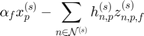

subproblemNetSocialWelfare
subproblemNetSocialWelfare Summary of this function goes here Detailed explanation goes here
Contents
Parameters
lambda.pf is a matrix and lambda.npf is a 3-D array. dg_pf is the inrement of gradient on lambda. Set the feasible start point
gradient of lambda(p,f)
z_np = this.I_node_path.*z_npf(index)
